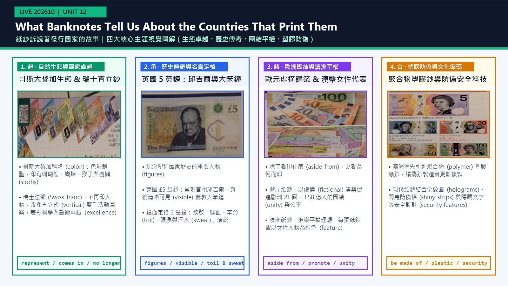

週日下午爺爺翻開他的世界紙鈔收藏冊，告訴我紙鈔除了代表財富，更承載各國身分認同：哥斯大黎加科隆印著樹懶，瑞士法郎則改採直立雙手圖案表彰卓越。
represent / comes in / no longer / excellence我拿起放大鏡看英國五英鎊上的重要人物邱吉爾，驚喜發現他身後清晰可見大笨鐘指著三點鐘，定格他「鮮血、辛勞、眼淚與汗水」的演說時刻。
figures / visible / toil & sweat除了看紙鈔印什麼，爺爺更教我探究背後原因：歐元用虛構建築促進歐洲 21 國團結，而澳洲則在每張鈔票印上女性以推崇平權理想。
aside from / fictional / promote / unity爺爺讓我摸澳洲率先引進、由聚合物塑膠製成的現代紙鈔，對光還能看見全像圖與閃亮防偽條，防止偽造者複製。這堂課讓我學會仔細觀察每張紙鈔！
be made of / plastic / security / shinyI 與爺爺共賞錢幣冊的溫馨故事改寫，訓練學測英文作文記敘文描寫力my grandfather (S) showed (V1) me his collection ... and explained (V2) + that 子句；that 子句主幹 money (S) tells (V) stories (O)。
showed / explained 敘述上週日的事；that 子句用現在式 tells / represents，因為是普遍事實，不必隨主句改過去式。
and 連接兩個動詞；that 引導 explained 的受詞子句；破折號內 the wealth (that) it represents 省略受格關代。
show me his collection 的「向我」要提到動詞前；破折號插入語改成「除了……之外」放在主詞後；stories about ... 的內容要搬到「故事」前。
show + 人 + 物（雙受詞）；collection of ... 譯「收藏的……」；敘述普遍真理時 that 子句維持現在式。
Last Sunday, my grandfather showed me（時間＋主句前半）his collection of world banknotes（直接受詞）and explained that（對等動詞 2＋that）money—beyond the wealth it represents—（子句主詞＋破折號插入語）tells stories about a country’s history, values, and identity.（子句動詞＋受詞）語塊 1（向我超車） ➔ 語塊 2 ➔ 語塊 3 ➔ 語塊 4（插入語改成「除了……之外」） ➔ 語塊 5（內容超車到故事前）
時間 Last Sunday 先翻「上週日」。
and explained that：「並解釋說，」。that 子句主詞是 money，中間插了一段破折號。
showed ... and explained ...：and 連接兩個過去式動詞，共用主詞 my grandfather。explained 後接完整句，that 引導名詞子句；子句講的是普遍事實，所以用現在式。the wealth it represents：先行詞 wealth，右邊 it represents 缺受詞，省略了受格關代。
showed ... and explained ...—beyond the wealth (that) it represents—，先行詞 the wealth 省略受格關代。Last Sunday）與人物互動開啟故事，引人入勝。I (S) saw (V) + that 子句 (O)；句首 Turning the first page 是分詞構句。
saw 敘述經過；that 子句現在式 comes in 描述科隆紙鈔至今不變的事實。
Turning ... 是表時間的分詞構句（＝When I turned ...），主詞與主句相同；that 引導 saw 的受詞子句；with ... 修飾 notes。
with coral reefs and cute sloths 要提到「繽紛紙鈔」前：「印有……的繽紛紙鈔」。
come in＝有……款式；with 片語短的時候可以提到名詞前。
Turning the first page,（分詞構句（時間））I saw that（主句＋that）the Costa Rican colón comes in colorful notes（名詞子句）with coral reefs and cute sloths.（介系詞片語（後位修飾））語塊 1 ➔ 語塊 2 ➔ 語塊 3 的「哥斯大黎加科隆有著」 ➔ 語塊 4（with 片語超車） ➔ 語塊 3 的「繽紛紙鈔」
句首 Turning the first page 是分詞構句，翻頁的人就是「我」，照順序翻：「翻開第一頁」。
主句 I saw that：「我看見」，後面接看到的內容。
Turning the first page 省略了主詞與連接詞，主詞就是主句的 I，表示「翻開第一頁時」。saw 後接完整句，that 引導名詞子句。colorful notes with coral reefs and cute sloths：with 片語修飾 notes，說明紙鈔上印了什麼。
Turning the first page, I saw...When I turned the first page, I saw...，主詞皆為 I，省略連接詞與主詞，動詞轉為 V-ing。And then I turned...，是大考作文拿分關鍵！Grandpa (S) pointed to (V) his Swiss franc notes (O)；, which ... 補充說明 notes；分號後 they are vertical and feature working hands。
pointed 敘述動作；which 子句與分號後用現在式 have / are / feature，描述紙鈔現在的樣子。
, which 引導非限定關係子句；分號＋instead 表取代；and 連接 are 與 feature；to honor ... 表目的。
to honor A 譯「以向 A 致敬」，A 要放進「向……致敬」中間。
, which 不能用 that；point to＝指向；honor 在敘事語氣中譯「致敬」。
Meanwhile, Grandpa pointed to his Swiss franc notes,（轉折副詞＋主句）which no longer have images of people;（非限定關係子句）instead, they are vertical and feature working hands（分號後的獨立句）to honor Switzerland’s excellence in science and the arts.（目的不定詞）語塊 1 ➔ 語塊 2 ➔ 語塊 3 ➔ 語塊 4（受詞放進「向……致敬」，領域再超車）
主句 Meanwhile, Grandpa pointed to his Swiss franc notes：「與此同時，爺爺指向他的瑞士法郎紙鈔」。
分號後 instead：「取而代之的是，它們採直立式設計，並以勞動雙手為特色」。
his Swiss franc notes, which no longer have images of people：逗號加 which 是非限定子句，補充說明這些紙鈔；先行詞是物，右邊缺主詞。instead, they are vertical and feature working hands 是獨立句，說明取而代之的設計，and 連接兩個動詞。to honor ... 說明設計的目的。
which 非限定關代 ＆ 分號對稱, which no longer have... 先行詞為 Swiss franc notes；分號後接 instead 表轉折。pointed to）帶出瑞士紙鈔的知識點。we (S) admired (V) historical figures (O)；like ... on the UK’s £5 note 舉例，with ... 附帶狀況，破折號後 marking ... 補充。
admired 敘述經過；分詞構句 marking 沒有時態，跟著主句。
like 舉例，with + O + adj. 附帶狀況，marking ... 是補充意義的分詞構句。
like Winston Churchill on the UK’s £5 note 整段提到「歷史人物」前；with 附帶狀況拆成短句，地點與時間都提前。
admire＝欣賞；like + 人名＝像……這樣的；mark 在此是「標記、紀念」某事件。
Next, we admired historical figures（主句）like Winston Churchill on the UK’s £5 note,（舉例＋地點）with Big Ben visible behind him（附帶狀況）at three o’clock—（時間片語）marking his famous “blood, toil, tears, and sweat” speech.（分詞構句）語塊 1 的「接著，我們欣賞了」 ➔ 語塊 2（舉例超車） ➔ 語塊 1 的「歷史人物」 ➔ 語塊 3 的「他身後清晰可見」 ➔ 語塊 4（時間超車） ➔ 語塊 3 的「大笨鐘」 ➔ 語塊 5
Next 翻「接著」，主句 we admired historical figures：「我們欣賞了……歷史人物」。
破折號後 marking 順著翻：「標記了他著名的『鮮血、辛勞、眼淚與汗水』演說」。
historical figures like Winston Churchill：like 舉例說明是哪類人物；with Big Ben visible behind him at three o’clock 是附帶狀況，Big Ben 與 visible 有主謂關係；破折號後 marking ... 是分詞構句，說明這個時間的意義。
admire ＆ 分詞構句 marking...—marking... 現在分詞片語修飾三點鐘的象徵歷史意義。admiredadmired（讚賞、欽佩地觀賞）呈現祖孫共賞的溫馨氛圍。Grandpa (S) taught (V) me (O) to ask (OC)；why ... 是 ask 的受詞子句，句首 Aside from + V-ing。
taught 敘述經過；were chosen 被動過去式，與主句時態一致。
what notes show 是 looking at 的受詞子句；teach + 人 + to V；why those designs were chosen 是 ask 的受詞子句（間接問句）。
Aside from ... 順翻「除了……」，主句補「更」；被動 were chosen 改成主動「選擇」。
teach sb to V＝教某人去做；間接問句用直述句語序（why those designs were chosen）。
Aside from looking at what notes show,（介系詞＋動名詞＋what 子句）Grandpa taught me to ask（主句）why those designs were chosen.（why 名詞子句）語塊 1 ➔ 語塊 2（補「更」） ➔ 語塊 3（被動改主動）
句首 Aside from looking at what notes show 先翻：「除了觀察紙鈔上呈現了什麼」。
looking at 後接受詞子句 what notes show，what 當 show 的受詞。taught me to ask 是 teach + 人 + to V。ask 後接受詞子句 why those designs were chosen，why 是副詞，子句結構完整，用直述句語序。
teach sb to V ＆ 雙名詞子句what notes show（表象）與 why those designs were chosen（內涵）在故事中形成頓悟點。He (S) explained (V) + that 子句 (O)；that 子句內有兩個子句，用 while 對比。
explained；that 子句現在式 promote / champions，陳述至今仍成立的事實。
that 引導 explained 的受詞子句；while 表對比「而」；by featuring ... 表手段。
across 21 nations 範圍提到「團結」前；by featuring ... 手段提到「捍衛」前：「透過……來捍衛」。
while 前後對照時譯「而」；champion 當動詞是「捍衛、擁護」；equal rights 精簡譯「平權」。
He explained that（主句＋that）Euro notes’ fictional buildings promote unity（子句 1）across 21 nations,（範圍介系詞片語）while Australia champions equal rights（對比子句 2）by featuring a woman on every note.（手段介系詞片語）語塊 1 ➔ 語塊 2 的「歐元紙鈔上的虛構建築促進了」 ➔ 語塊 3（範圍超車） ➔ 語塊 2 的「團結」 ➔ 語塊 4 的「而澳洲則」 ➔ 語塊 5（手段超車） ➔ 語塊 4 的「捍衛平權」
He explained that：「他解釋說，」後面接他說的內容。
explained 後接 that 名詞子句，說明爺爺解釋的內容。while 連接兩個完整句，主詞不同、內容對照，所以是對比的「而」。by featuring ... 說明澳洲捍衛平權的方法。
while 對比子句explained that... 之後包覆兩大對比概念。He explained that... 帶出知識，語氣自然不說教。When 時間子句 ＋ 主句 I (S) learned (V) + that 子句 (O)；that 子句 many modern notes are made of polymer，後接同位語、關係子句與補充片語。
touched / learned 敘述經過；that 子句與關係子句用現在式，陳述普遍事實。
When 引導時間子句；that 引導 learned 的受詞子句；a durable plastic 是同位語，that stops ... 是關係子句；complete with ... 是形容詞片語補充。
complete with ... 譯「並配備了……」，舉例 like ... 再提到「安全設計」前。
stop sb from V-ing＝防止某人做；complete with＝配備有、附帶；同一句的兩個 that，一個是名詞子句，一個是關代。
When I touched an Australian bill,（時間子句）I learned that many modern notes are made of polymer,（主句＋名詞子句）a durable plastic（同位語）that stops counterfeiters from copying them,（關係子句）complete with security features like holograms and shiny strips.（形容詞片語補充）語塊 1 ➔ 語塊 2（材料超車） ➔ 語塊 3 的「這是一種」 ➔ 語塊 4（關係子句超車） ➔ 語塊 3 的「耐用塑膠」 ➔ 語塊 5（舉例超車）
When I touched an Australian bill 照順序翻：「當我觸摸一張澳洲紙鈔時」。
learned that many modern notes are made of polymer：that 後接完整句，是名詞子句。a durable plastic that stops counterfeiters from copying them：a durable plastic 是 polymer 的同位語；後面的 that 右邊缺主詞，是關係代名詞。complete with ... 是形容詞片語，補充這種紙鈔還附帶了哪些安全設計。
stop sb from V-ing ＆ complete with...stop / prevent / keep + 受詞 + from V-ing「防止某人做某事」。complete with... 表「配備有、包含全套……」。touchedtouched 帶出紙鈔特殊的塑膠光滑觸感。I (S) realized (V) + (that) 子句 (O)；子句 money (S) does have (V) a lot to say (O)。
realized；子句現在式 does have，陳述普遍成立的結論，並用 does 強調。
realized 後省略 that 的名詞子句；does have 是強調助動詞；a lot to say 是不定詞修飾。
That afternoon 放句首順翻；have a lot to say 潤成「有千言萬語要訴說」，補「向我們」讓訴說有對象。
does + 原形 譯「確實」；realize 在此是「領悟、意識到」，不是「實現」。
That afternoon,（時間狀語）I realized（主句）money really does have a lot to say!（省略 that 的名詞子句）語塊 1 ➔ 語塊 2 ➔ 語塊 3
這是故事的結尾句，整句都是順向結構。
That afternoon, I realized：「那個下午，我領悟到」。realized 後面省略了 that，直接接領悟的內容。
realized 後面直接接完整句 money really does have a lot to say，中間省略了引導名詞子句的 that。子句中的 does have 用助動詞 does 加強肯定，等於「確實有」。
does have ＆ 記敘收尾realized (that) money really does have... 省略受詞子句連接詞 that，以強調助動詞 does 收束全篇。comes in colorful notes（有色彩繽紛的紙鈔款式）。Meanwhile（同時；另一方面）對照另一頁的瑞士法郎。no longer + have（不再有……）。Aside from + V-ing（除了看圖案之外，爺爺還告訴我……）。is made of polymer plastic（由聚合物塑膠製成）。sweat）」浸濕。vertical）」設計。figures）」。come in 第二個意思為「（商品）到貨、進貨」。stop + O. + from + V-ing（阻止某人做某事），介系詞 from 後面必接動名詞 copying。I 主動執行「翻頁」動作，且兩句之間沒有連接詞 and，故用現在分詞構句 Turning the first page...。Aside from 可同時表達「包含（besides）」與「排除（except for）」，此處表排除（除了一些小錯誤外，整體很好），而 In addition to 只能表加法包含，故選 (A)。polymer plastic）製成，並具備全像圖與閃亮防偽條。why those designs were chosen）」。